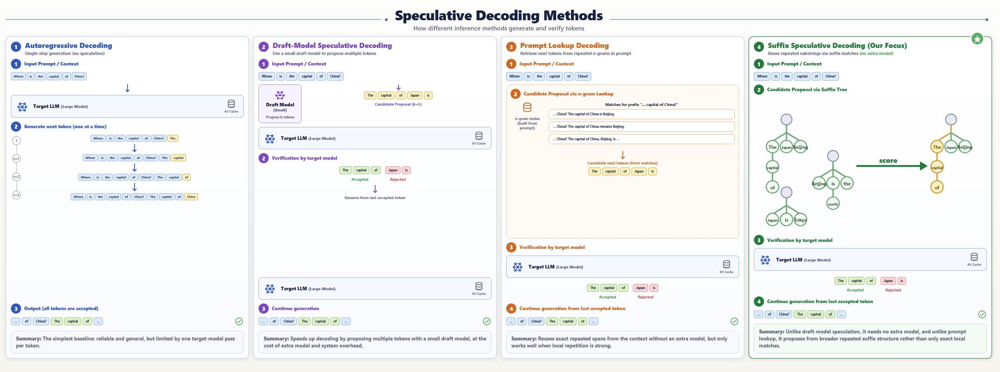
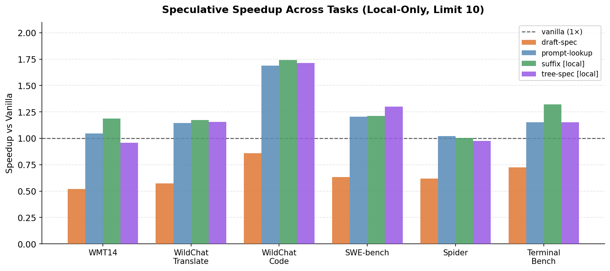
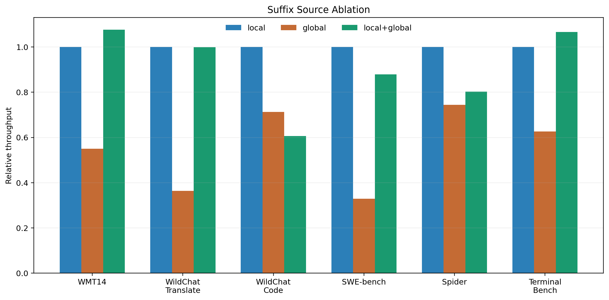
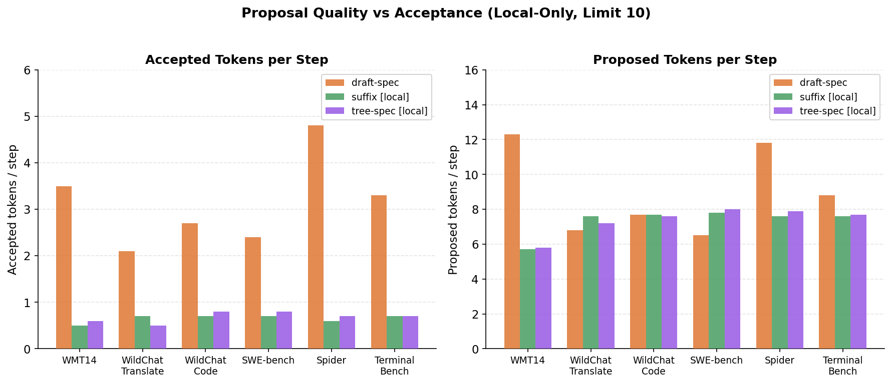

MLSys Project Poster
Suffix Speculative Decoding for Faster LLM Serving
Suffix speculation improves LLM decoding without a draft model; tree-based verification reveals when more aggressive speculation pays off.
1.74x
WildChat code suffix [local] speedup
1.19x
WMT14 suffix [local] speedup
1.30x
SWE-bench tree-spec [local] speedup
Problem
Autoregressive decoding is the bottleneck
Large language models usually pay one target-model verification pass per generated token, so throughput depends on reducing verifier work without breaking output quality.
Gap in transformers
No first-class suffix speculation path
Hugging Face already supports draft-model speculation and prompt lookup, but not a suffix-based candidate generator inside the assisted generation stack.
Completed Contribution
Add suffix decoding and benchmarked it against strong baselines
Our finished system extends generate() with a
suffix-based proposer, keeps a unified verification interface, and
evaluates suffix and tree-based decoding against shared baselines.
Figure 1
How suffix decoding compares to the other inference paths
One shared visual explains vanilla decoding, draft-model speculation, prompt lookup, and our suffix-based method.

Key Observation
Why suffix wins early
In the short-output regime, suffix is usually the best practical baseline even though its acceptance rate stays low.
- It avoids a separate draft model and its coordination cost.
- Proposals are cheap, so 7–10% acceptance still beats vanilla on 4 of 6 workloads.
- Tree-spec [local] is within 0.02–0.03× of suffix on most workloads, taking the lead only on SWE-bench (1.30× vs 1.21×).
Suffix [Local] Delivers Consistent Short-Regime Speedups
All methods, local-only, limit 10 · Workloads: WMT14, WildChat translate/code, SWE-bench, Spider, TerminalBench

Systems Lesson
Acceptance is not the objective
Higher acceptance can still lose end-to-end if the proposal path is expensive or the verifier cannot amortize enough work.
- Draft-spec reaches 28–40% acceptance — far above suffix's 7–10% — yet is slower than vanilla on every workload.
- Suffix wins with ~0.6–0.7 accepted tokens/step because its proposal path is lightweight.
- The right metric is end-to-end throughput, not acceptance rate in isolation.
Local Matching Is the Right Suffix Default
Compare local, local+global, and
global-only

Acceptance Rate Alone Does Not Predict Speed
Accepted and proposed tokens per step · local-only, limit 10

Tree-Spec Extension
Where tree-spec matters
Tree-spec is not the strongest short-regime baseline, but it has much higher upside once generation is long enough to amortize verification overhead.
- At
limit 10, suffix usually wins or ties in practical throughput. - At
limit 50, tree-spec breaks out on SWE-bench (155.5 tok/s, 71.5% draft acceptance) where draft acceptance and long outputs amortize verifier overhead. - On the other limit-50 workloads, tree-spec settles into a low-acceptance regime (12.7%–18.7%) and clusters near 60–67 tok/s.
- The method is best viewed as a higher-ceiling extension, not a drop-in replacement for short outputs.